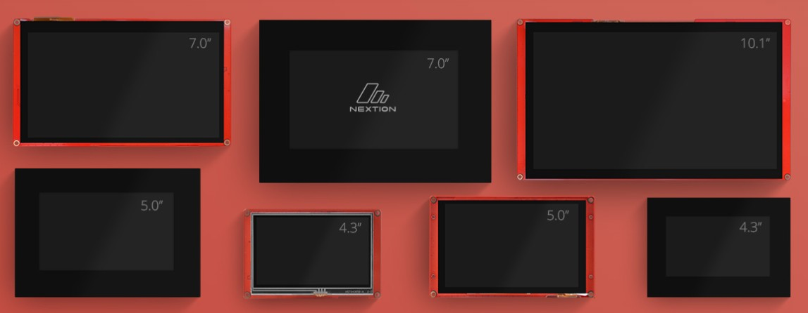

Além do Display Comum: Como Escolher a Melhor Tela Touch para Projetos de P&D Professional
Uma análise técnica entre ecossistemas para interfaces homem-máquina robustas e eficientes.
Quando desenvolvemos um produto eletrônico do zero, a interface homem-máquina (IHM) é o que define a experiência do usuário. Para projetos simples, um display LCD 16x2 ou um OLED via I2C resolvem o problema. Mas quando o projeto exige um acabamento profissional, gráficos fluidos e controles dinâmicos por toque, precisamos subir de nível e implementar uma tela touch inteligente.
A grande vantagem de usar telas inteligentes em sistemas embarcados é poupar o microcontrolador principal (seja um ESP32, STM32 ou Arduino) de processar gráficos pesados. Essas telas possuem seu próprio processador e memória dedicados. Toda a parte visual é desenhada em um software no computador e descarregada no display; o microcontrolador principal só precisa enviar e receber comandos simples via comunicação serial (UART).
No mercado de Pesquisa e Desenvolvimento (P&D), duas marcas se destacam quando o assunto é robustez e facilidade de integração: Nextion e DWIN. Ambas são excelentes, mas possuem filosofias de desenvolvimento bem diferentes.

Nextion: Agilidade e Comunicação Simplificada
A Nextion é uma das soluções mais populares entre desenvolvedores e makers avançados. O seu ecossistema gira em torno do software Nextion Editor, onde você arrasta os componentes visuais (botões, barras de progresso, sliders) e define o layout da tela.
- Pontos Fortes: A curva de aprendizado é muito rápida. A biblioteca de integração para plataformas como Arduino e PlatformIO é madura, facilitando o recebimento de eventos de toque (ex: "botão 1 foi pressionado") de forma direta no código em C/C++.
- Indicação: Ideal para prototipagem rápida e produtos onde o tempo de desenvolvimento do software precisa ser o menor possível.
DWIN (Tecnologia DGUS): Robustez Industrial e Custo-Benefício
A DWIN vem ganhando um espaço gigantesco no desenvolvimento industrial e em projetos de alta escala, como interfaces para maquinários e balanças de precisão. Ela utiliza a tecnologia DGUS (DWIN Graphic Utilized System).
- Pontos Fortes: O grande diferencial da DWIN está no gerenciamento direto de memória através de endereços específicos (as variáveis VP e SP). Em vez de enviar strings de texto complexas, a comunicação é feita manipulando registradores de memória diretamente na tela através do barramento serial, o que torna o sistema extremamente rápido, confiável e livre de travamentos. Além disso, costumam ter um custo-benefício excelente para produção em lote.
- Indicação: Perfeita para produtos finais que operam em ambientes industriais ou comerciais severos, onde a estabilidade do hardware e o controle granular da memória são prioridades absolutas.
Qual escolher para o seu próximo circuito?
A escolha depende diretamente do volume de produção e da complexidade da sua arquitetura de firmware. Se você precisa colocar um protótipo funcional para rodar em poucos dias, a Nextion oferece um caminho mais amigável. Agora, se o foco é o desenvolvimento de um produto comercial robusto, escalável e com comunicação de dados de baixo nível ultra-eficiente, vale a pena dominar a arquitetura DWIN/DGUS.
Criar hardware profissional do zero exige entender não apenas o design da PCB, mas também como otimizar os barramentos de comunicação do seu sistema. Delegar os gráficos para um display inteligente é um dos melhores caminhos para manter o firmware do seu processador leve e focado no que realmente importa: a lógica de controle.